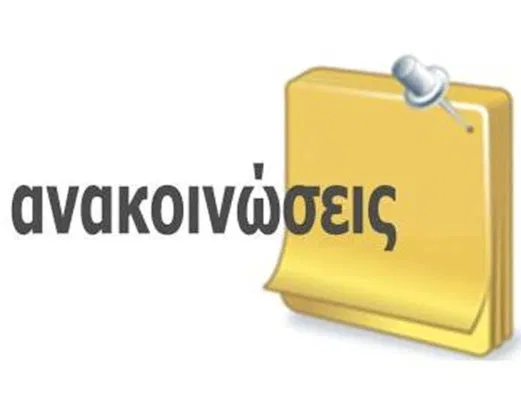

|
ΗΛΕΚΤΡΟΝΙΚΗ ΓΡΑΜΜΑΤΕΙΑ
|
|
|
ΗΛΕΚΤΡΟΝΙΚΗ ΓΡΑΜΜΑΤΕΙΑ
|
|  | Σκοπός - Περιγραφή
Σκοπός του προγράμματος είναι η εξειδίκευση (α) αποφοίτων Πανεπιστημίων κλάδων διαφορετικών της Πληροφορικής, (β).. |
|
| Προϋποθέσεις Εισαγωγής
Γίνονται δεκτοί απόφοιτοι τμημάτων των ΑΕΙ κλάδων διαφορετικών της Πληροφορικής, απόφοιτοι τμημάτων Τ.Ε.Ι. κλάδων Πληροφορικής όπως επίσης και απόφοιτοι Τμημάτων ΑΕΙ κλάδων της Πληροφορικής που απέκτησαν το πτυχίο τους πέραν της δεκαετίας, της ημεδαπής ή ομοταγών ιδρυμάτων της αλλοδαπής.. |
||
| Μαθησιακά αποτελέσματα
Με την επιτυχή ολοκλήρωση του προγράμματος οι φοιτητές θα μπορούν να: Να κατανοήσουν ότι η Πληροφορική είναι μία εφαρμοσμένη επιστήμη της Μηχανικής, η οποία παρέχει ένα σύνολο τεκμηριωμένων αρχών, μεθοδολογιών και τεχνικών με την βοήθεια των οποίων μπορεί κανείς να αναπτύξει ποιοτικά προϊόντα λογισμικού.. |
||
| Οδηγίες σύνδεσης για την εξ αποστάσεως ορκωμοσία διδακτόρων και αποφοίτων προγραμμάτων μεταπτυχιακών σπουδών
Ενημερώνουμε τους αποφοίτους των ΠΜΣ και ΔΠΜΣ, καθώς και των διδακτόρων, που θα συμμετάσχουν στη διαδικτυακή τελετή ορκωμοσίας, την Τετάρτη 20 Ιανουαρίου 2020 και ώρα 12.00, μέσω τηλεδιάσκεψης με την πλατφόρμα e:presence, ότι μία εβδομάδα πριν την τελετή.. |
||